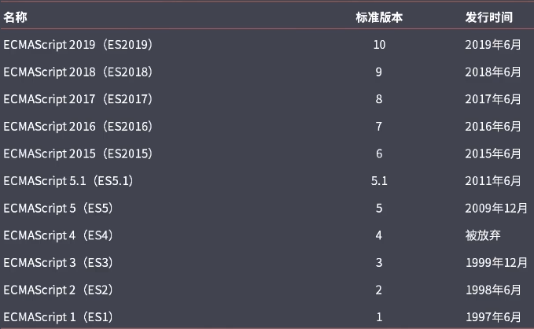

JavaScript ECMAScript 6.0 发表于 2021-06-28 | 更新于 2021-07-03
| 字数总计: 1.5k | 阅读时长: 6分钟 | 阅读量:
ES6 菜鸟教程
let 与 const var 关键字声明变量,将变量或者形参所在的函数的大括号作为作用域处理,并且遵循垃圾回收进制。
let 关键字声明的变量,只要遇到大括号就形成作用域,所在的作用域叫做块级作用域。let 只能声明一次 var 可以声明多次。
const 在let上多了只读,变量值只能在声明的时候确定,后面没有办法修改(不能修改内存指向)。不能改的变量叫做常量。
最佳实践：不用var,主用const,配合使用let
1 2 3 4 5 6 7 8 9 10 11 12 13 14 15 16 17 18 19 let a = 1 ;let a = 2 ;var b = 3 ;var b = 4 ;console .log(a); console .log(b);if (1 ) { var num = 10 ; } console .log(num); if (1 ) { let num1 = 10 ; console .log(num1); } console .log(num1);
1 2 3 4 5 6 7 8 9 10 11 12 13 14 15 16 17 18 19 20 21 22 23 24 25 26 <script> window .onload = function ( var aBtns = document .getElementsByTagName("button" ); for (let i = 0 ; i < aBtns.length; i++) { aBtns[i].onclick = function ( console .log(i); } } } </script> <body> <button>按钮1 </button> <button>按钮2 </button> <button>按钮3 </button> </body>
1 2 3 4 const IP = "10.12.123.14" ;console .log(IP); IP = "xxx" ; console .log(IP);
箭头函数 一种新潮的函数写法,适当的省略函数中的function和return关键字。
注：
1.箭头函数,不能用new
2.箭头函数如果返回值是一个对象,一定要加()
3.箭头函数中this指向的是上一层函数的主人
1 2 3 4 5 6 7 8 9 10 11 12 13 14 15 16 17 18 19 20 21 22 23 24 25 26 27 28 function show (x ) console .log("hello world" ); } var show = () => { console .log("hello world" ); } function xxx (num ) console .log(num); } var xxx = num => console .log(num); } function add (x ) return x + 10 ; } var add = x => return x + 10 ; } function show (x, y ) console .log(x + y); } var show = (x, y ) => { console .log(x + y); }
解构赋值 1 2 3 4 5 6 7 8 9 10 11 12 13 14 15 16 17 18 19 20 21 22 23 var [x, y, z] = [10 , 20 , 30 ];console .log(x + "," + y + "," + z); var [x, [a, b], z] = [10 , [20 ], 30 ];console .log(a + "," + z); var { name, age, sex } = { age: 18 , name: "哪吒" , sex: "男" }; console .log(name);console .log(age);console .log(sex);const arr = [100 ,200 ,300 ];const [foo, ...rest] = arr;console .log(rest);
ES6 字符串 传统字符串：所有单引号,双引号括起来的都叫做字符串。
ES6字符串：反引号 ``
1.ES6字符串,换行,代码缩进,都可以在字符串中体现出来
2.${变量/表达式/函数调用}
1 2 3 4 5 6 7 8 9 10 11 12 13 14 15 16 var str1 = `hello world` ;console .log(str1);function showSelf ({ name, age, sex = "男" } ) console .log(`${name} ,今年${Math .max(age, 20 , 30 )} 岁,性别${sex} ` ); } showSelf({ age : 18 , name : "小小" , sex : "女" });
ES6 数组 Array.from() 功能：将伪数组转成真数组
1 2 3 4 5 6 7 8 9 window .onload = function ( var aLis = document .getElementsByTagName("li" ); console .log(aLis.length); aLis = Array .from(aLis); aLis.push("hello" ); console .log(aLis); }
查找 find
功能：在数组中查找符合条件的元素,只要找到第一个符合条件的元素,就终止遍历。
返回值：找到的元素。
findIndex
返回值：找到的元素下标。
1 2 3 var arr = [10 , 20 , 30 , 40 , 50 ];console .log(arr.find(item =>20 )); console .log(arr.findIndex(item =>20 ));
填充 arr.copyWithin()
功能：将一定范围索引的数组元素修改为此数组另一指定范围索引的元素。
第一个参数：从哪个下标开始
第二个和第三个参数：范围 start end
1 2 var arr = [1 , 2 , 3 , 4 , 5 , 6 , 7 , 8 , 9 , 10 ];console .log(arr.copyWithin(2 , 4 , 9 ));
ES6 对象 合并对象 Object.assign()
功能：将所有传入的对象,都合并到第一个对象中。
浅拷贝：只拷贝地址
深拷贝：将复合数据类型重新生成一份,进行拷贝
1 2 3 4 5 6 7 8 9 10 11 12 var obj1 = { a: 10 } var obj2 = { b: 20 , c: 30 } var obj3 = { d: 40 , f: ["hello" , "world" , true ] } console .log(Object .assign(obj1, obj2, obj3));
集合 集合：1.不重复。2.无序
Set Set 对象允许你存储任何类型的唯一值，无论是原始值或者是对象引用。
1 2 3 4 5 6 7 8 9 10 11 12 13 14 15 16 17 18 19 20 21 22 23 24 25 26 27 28 29 30 31 let imgs = new Set ();imgs.add(100 ); imgs.add(100 ); imgs.add("hello" ); imgs.add(true ); imgs.add(new String ("world" )); imgs.add(new String ("world" )); console .log(imgs); for (let item of imgs.keys()) { console .log(item); } for (let item of imgs.values()) { console .log(item); } for (let item of imgs.entries()) { console .log(item); } var set = new Set ([10 , 20 , 30 , 40 , 5 , 0 , 9 , 2 , 6 ]);console .log(set);var arr = [...set];console .log(arr);
Map map 映射关系
1 2 3 4 5 6 7 8 9 10 11 12 13 14 15 16 let map = new Map ();map.set("张三" , "打渔的" ); map.set("黄五" , "种地的" ); map.set("楠九" , "打猎的" ); map.set("张三" , "开车的" ); console .log(map); console .log(map.get("楠九" )); for (let [key, value] of map) { console .log(key, value); }